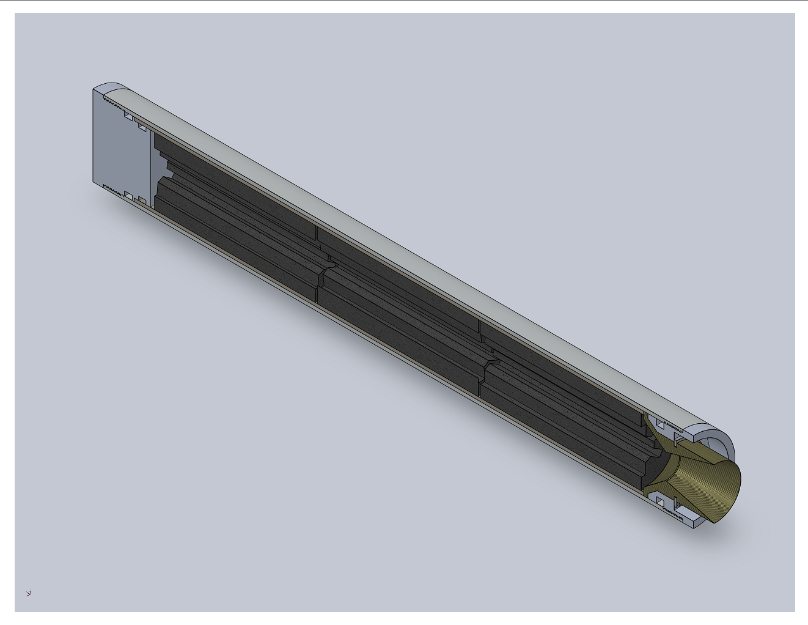

PROJ / SRM‑01
Paused
Class
38mm H‑Class / 400 psi
Nozzle
2‑Part Al / Phenolic, Conical
Analysis
MATLAB / ANSYS / RPA
SRAD H-Class Solid Rocket Motor
38mm RNX-71 — Design Through ManufacturingLed design of a student-researched-and-developed 38mm H-class motor, the team's first, targeting 400 psi chamber pressure. Sized throat and grain geometry by hand and in MATLAB, cross-validated performance in OpenRocket and RPA, and ran thermal/fluid analysis in ANSYS. Designed a two-part aluminum/phenolic-insert conical nozzle for manual-lathe manufacturability. Case and closure manufacturing began before the project was paused by the university for review; development continues independently.
